Examples and Tutorials¶
Examples¶
In the example section we provide a variety of TESPy applications, among others:
a very basic model of the clausius rankine process,
the calculation of backpressure lines of a combined heat and power cycle at different loads and feed flow temperature levels,
modeling approach for a district heating system with various consumers and system infrastructure as well as
the COP of a heat pump dependent on load, ambient temperature and heat delivering fluid (air vs. water).
You can find all examples in the examples repository on github. Additional small examples can be found in the API-documentation.
Examples
Clausius rankine cycle¶
This example provides a model for a basic clausius rankine cycle. The process flow diagram is shown in the image below, the source code can be found at the tespy_examples repository.
Figure: Topology of the basic clausius rankine cycle.¶
The basic clausius rankine cycle is built up of a steam turbine, a condenser, the feed water pump and the steam generator. The ideal process’ isentropic efficiencies of the steam turbine and the pump are at a value of 100 %, and pressure losses in the condenser and the steam generator are non-existent, which would result in the thermal efficiency being equal to the Carnot efficiency. For this example realistic figures have been chosen. After the plant design an offdesign calculation with 90 % rated power is performed. The inline-comments give you hints which and why offdesign parameters have been chosen.
For a good start you can try to modify or exchange parameters. E.g. adjust the value of the upper terminal temperature difference at the condenser, or replace this parameter with a pressure at the turbine’s outlet. In order to get more familiar with how TESPy works you could try to insert more components, maybe add an extraction of the steam turbine for preheating the feed water. It is strongly recommended to add new components bit per bit, troubleshooting is much easier this way.
Combined cycle with backpressure turbine¶
Another example for chp units, this one is a combined cycle power plant using a backpressure steam turbine. Additionally to the heat extraction at the steam turbine condenser, the district heating water extracts energy from the waste heat of the waste heat steam generator. You will find the source code here.
Figure: Topology of the chp unit.¶
The example file handles the plant’s design as well as the offdesign performance.
CHP with backpressure turbine¶
We have set up a simple combined heat and power unit for this example. A backpressure steam turbine is operated with steam extraction for preheating purposes. You will find the source code here.
Figure: Topology of the chp unit.¶
At first, a plant design is chosen: The unit provides a total power of 5 MW and heating at a temperature of 110 °C for the feed flow. After that, the temperature at feed flow and live steam mass flow are altered (70 °C to 120 °C and 60 % to 105 % in respect to design mass flow) to cover the unit’s range of operation. Thus, the calculation mode is switched to offdesign and the temperature and mass flow are altered in two embedded loops. The latest calculated case of the same mass flow is selected for initialisation in order to achieve better and faster convergence. The results are saved to .csv-files and the following plot of backpressure lines will be created.
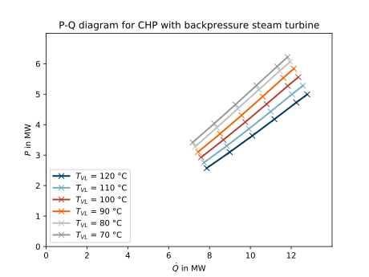
Figure: Backpressure lines of a CHP unit.¶
Combustion engine¶
We have added a combustion engine in version 0.0.5 of TESPy. The combustion
engine is based on the combustion chamber, and additionally provides a power
as well as two heating outlets and heat losses can be taken into account, too.
Power output, heat production and heat losses are all linked to the thermal
input of the combustion engine by characteristic lines, which usually are
provided by the manufacturer. TESPy provides a set of predefined
characteristics (documented in the <tespy.data> module).

Figure: Topology of the combustion engine.¶
The characteristics take the power ratio ( ) as
argument. For a design case simulation the power ratio is always assumed to be
equal to 1. For offdesign calculation TESPy will automatically take the rated
power from the design case and use it to determine the power ratio. Still it is
possible to specify the rated power manually, if you like.
) as
argument. For a design case simulation the power ratio is always assumed to be
equal to 1. For offdesign calculation TESPy will automatically take the rated
power from the design case and use it to determine the power ratio. Still it is
possible to specify the rated power manually, if you like.
In contrast to other components, the combustion engine has several busses, which are accessible by specifying the corresponding bus parameter:
TI (thermal input),
Q (total heat output),
Q1 and Q2 (heat output 1 and 2),
QLOSS (heat losses) and
P (power output).
If you want to add a bus to the example from the tespy_examples repository, your code could look like this:
chp = CombustionEngine('chp')
b = Bus('some label')
# for thermal input
b.add_comps({'comp': chp, 'param': 'TI'})
# for power output
b.add_comps({'comp': chp, 'param': 'P'})
Enjoy fiddling around with the source code of the combustion engine in the examples repository!
Distric heating system¶
The district heating system is a great example for the usage of flexible user-defined subsystems. The example system and data are based on the district heating system Hamburg Wilhelmsburg [Lor14]. The source code for this example can be found here. Although the structure of the system (see the Figure below) does not seem very complex, it has more than 120 components. But we can easily determine repeating structures for the consumers and this is, where the subsystems come in place.
Figure: Topology of the heating system.¶
The single consumers are connected to the main grid with a control valve at the outlet and each fork is connected with a pipe to the next fork. Also, the main grid may have a dead end (e.g. in the housing areas, see subsystem closed) or is open to connect to another part of the grid (industrial area, see subsystem open). Additionally, each branch of the main grid is connected to the upstream part with the fork subsystem (Ki, see subsystem fork).
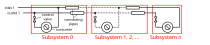
Figure: Generic topology of the dead end subsystem.¶
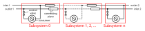
Figure: Generic topology of the open subsystem.¶
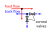
Figure: Generic topology of the forks (variable number of branches).¶
After the system has been set up, we designed the pipes’ insulation in a way, that the feed flow the temperature gradient is at 1 K / 100 m and the back flow gradient is at 0.5 K / 100 m. Having designed the system, heat losses at different ambient temperatures can be calculated, as the heat transfer coefficient for the pipes has been calculated in the design case. By this way, it is for example possible to apply load profiles for the consumers as well as a profile for the ambient temperature to investigate the network heat losses over a specific period of time.
COP of a heat pump¶
This example is based on the heat pump tutorial and shows how to calculate the COP of a heat pump at different ambient temperatures and different loads of the plant. The idea is very similar to the CHP example, thus you should have a look at the tutorial and the CHP example first. Be aware, that there are slight changes regarding the topology of the system from the tutorial to this example. You will find the source code in this repository.
Figure: Topology of the heat pump unit.¶
After the plant has been designed, the consumer’s heat demand and the ambient temperature are modified within defined ranges. Generally, if you are performing offdesign calculation, keep in mind, that a good initial guess/solution is the key to good convergence progress. This is why, we initialise the calculation at a higher ambient temperature with the results from the calculation of the same load and the nearest ambient temperature possible (in this case always the calculation one step before). This helps the algorithm to stabilize and find a solution. If you skip out on a large range of temperature or power, you might run into convergence issues. The figures below show the COP of the heat pump for two different heat sources at different temperature levels and at different loads: In the first figure water is used as heat source, in the second one air. Obviously, the heat pump using air performs much worse. This is mainly to the high power consumption of the fan, as for the same amount of heat to be transferred, a much higher volume has to be moved.
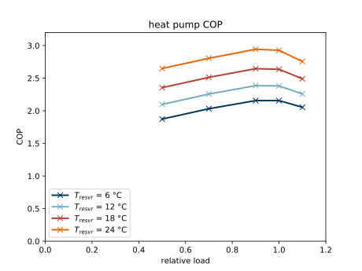
Figure: COP of the heat pump using water as heat source.¶
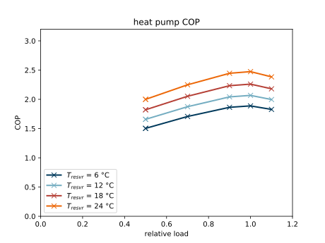
Figure: COP of the heat pump using air as heat source.¶
Solar collector¶
This example shows how you can use a solarthermal collector in TESPy. The process flow diagram is shown in the image below, the source code can be found at the tespy_examples repository.

Figure: Topology of the solar collector.¶
The solarthermal collector is used to transfer heat from the solar radiation to
the collector fluid. The TESPy component
tespy.components.heat_exchangers.solar_collector.SolarCollector
inherits from the
tespy.components.heat_exchangers.simple.HeatExchangerSimple
component. An energy balance is applied according to the
tespy.components.heat_exchangers.solar_collector.SolarCollector.energy_group_func()
method, which takes the collector’s
surface area
A,loss key figures
lkf_lin(linear) andlkf_quad(quadratic),ambient temperature
Tamb,optical efficiency
eta_optas well asincoming radiation
E(W/m^2)
into account.
In the script different ways of parametrisation are shown. In the last part a collector is designed and the offdesign performance at different rates of absorption and ambient temperatures is calculated subsequently. Assuming a constant mass flow through the collector, the outlet temperature and the pressure losses of the collector are calculated.
For example, if you want to calculate the performance of the collector within a specific period of time, you could have the absorbed energy and the ambient temperature as input time series and iterate over said series. As the absorbed energy of the collector is a function of the global radiation on the inclined surface, datetime and location only (optical losses are not temperature dependent), you could calculate the absorption in a preprocessing script. If you are to create such a script, we would appreciate you sharing and adding it to TESPy!
Tutorials¶
We provide two different tutorials for you to better understand how to work with TESPy. You will learn how to create basic models and get the idea of designing a plant and simulating the offdesign behavior in the heat pump tutorial. On top of that, we created a tutorial for the usage of the combustion chamber: It is an important component for thermal power plants while being a source for many errors in the calculation.
The last tutorial is a plant design optimization tutorial. A thermal power plant with two extraction stages is optimized in regard of thermal efficiency with respect to the extraction pressure levels.
Tutorials
Heat pump tutorial¶
Task¶
This tutorial introduces you in how to model a heat pump in TESPy. You can see the plants topology in the figure. Also, you will find a fully working model in the last chapter of this tutorial.
Figure: Topology of the heat pump.¶
The main purpose of the heat pump is to deliver heat e.g. for the consumers of a heating system. Thus, the heat pump’s parameters will be set in a way, which supports this target. Generally, if systems are getting more complex, it is highly recommended to set up your plant in incremental steps. This tutorial divides the plant in three sections: The consumer part, the valve and the evaporator and the compressor as last element. Each new section will be appended to the existing ones.
Set up a Network¶
In order to simulate our heat pump we have to create an instance of the
tespy.networks.network.Network class. The network is the main
container of the model and will be required in all following sections. First,
it is necessary to specify a list of the fluids used in the plant. In this
example we will work with water (H2O) and ammonia (NH3).
Water is used for the cold side of the heat exchanger, for the consumer and for
the hot side of the environmental temperature. Ammonia is used as coolant
within the heat pump circuit. If you don’t specify the unit system, the
variables are set to SI-Units.
from tespy.networks import Network
nw = Network(fluids=['water', 'NH3'],
T_unit='C', p_unit='bar', h_unit='kJ / kg', m_unit='kg / s')
We will use °C, bar and kJ/kg as units for temperature and enthalpy.
Modeling the heat pump: Consumer system¶
Components¶
We will start with the consumer as the plant will be designed to deliver a
specific heat flow. From figure 1 you can determine the components of the
consumer system: condenser, pump and the consumer (
tespy.components.heat_exchangers.simple.HeatExchangerSimple
). Additionally we need a source and a sink for the consumer and the heat pump
circuit respectively. We will import all necessary components already in the
first step, so the imports will not need further adjustment.
We label the sink for the coolant “valve”, as for our next calculation the valve (labeled “valve”) will be attached there. In this way, the fluid properties can be initialized by .csv at the interface-connection, too.
from tespy.components import (
Source, Sink, CycleCloser, Valve, Drum, Pump, Compressor,
Condenser, HeatExchangerSimple, HeatExchanger)
# sources & sinks
c_in = Source('coolant in')
cons_closer = CycleCloser('consumer cycle closer')
va = Sink('valve')
# consumer system
cd = Condenser('condenser')
rp = Pump('recirculation pump')
cons = HeatExchangerSimple('consumer')
Connections¶
In the next steps we will connect the components in order to form a network.
Every connection requires the source, the source id, the target and the target
id as arguments: the source is the component from which the connection
originates, the source id is the outlet id of that component. This applies
analogously to the target. To find all inlet and outlet ids of a component look
up the class documentation of the respective component. An overview of the
components available and the class documentations is provided in the
TESPy modules overview. The
tespy.connections.connection.Ref class is used specify fluid
property values by referencing fluid properties of different connections. It is
used in a later step.
from tespy.connections import Connection, Ref
# consumer system
c_in_cd = Connection(c_in, 'out1', cd, 'in1')
close_rp = Connection(cons_closer, 'out1', rp, 'in1')
rp_cd = Connection(rp, 'out1', cd, 'in2')
cd_cons = Connection(cd, 'out2', cons, 'in1')
cons_close = Connection(cons, 'out1', cons_closer, 'in1')
nw.add_conns(c_in_cd, close_rp, rp_cd, cd_cons, cons_close)
# connection condenser - evaporator system
cd_va = Connection(cd, 'out1', va, 'in1')
nw.add_conns(cd_va)
Note
Instead of just connecting the consumers outlet to the pumps inlet, we must
make use of an auxiliary component: Closing a cycle without further
adjustments will always result in a linear dependency in the fluid and the
mass flow equations. We therefore need implement a CycleCloser. The
tespy.components.basics.cycle_closer.CycleCloser component makes
sure, the fluid properties pressure and enthalpy are identical at the inlet
and the outlet. The component will prompt a warning, if the mass flow or
the fluid composition at its outlet are different to those at its inlet. A
different solution to this problem, is adding a merge and a splitter at
some point of your network and connect the second inlet/outlet to a
source/sink. This causes residual mass flow and residual fluids to
emerge/drain there.
Parametrization¶
For the condenser we set pressure ratios on hot and cold side and additionally we set a value for the upper terminal temperature difference as design parameter and the heat transfer coefficient as offdesign parameter. The consumer will have pressure losses, too. Further we set the isentropic efficiency for the pump, the offdesign efficiency is calculated with a characteristic function. Thus, we set the efficiency as design parameter and the characteristic function as offdesign parameter. In offdesign calculation the consumer’s pressure ratio will be a function of the mass flow, thus as offdesign parameter we select zeta. The most important parameter is the consumers heat demand. We marked this setting as “key parameter”.
cd.set_attr(pr1=1, pr2=0.99, ttd_u=5, design=['pr2', 'ttd_u'],
offdesign=['zeta2', 'kA_char'])
rp.set_attr(eta_s=0.8, design=['eta_s'], offdesign=['eta_s_char'])
cons.set_attr(pr=0.99, design=['pr'], offdesign=['zeta'])
In order to calculate this network further parametrization is necessary, as e.g. the fluids are not determined yet: At the hot inlet of the condenser we define the temperature and the fluid vector. In order to fully determine the fluid’s state at this point, an information on the pressure is required. This is achieved by setting the terminal temperature difference (see above). The same needs to be done for the consumer cycle. We suggest to set the parameters at the pump’s inlet. On top, we assume that the consumer requires a constant inlet temperature. The CycleCloser automatically makes sure, that the fluid’s state at the consumer’s outlet is the same as at the pump’s inlet.
c_in_cd.set_attr(T=170, fluid={'water': 0, 'NH3': 1})
close_rp.set_attr(T=60, p=10, fluid={'water': 1, 'NH3': 0})
cd_cons.set_attr(T=90)
# %% key parameter
cons.set_attr(Q=-230e3)
Note
In TESPy there are two different types of calculations: design point and offdesign calculation. All parameters specified in the design attribute of a component or connection, will be unset in a offdesign calculation, all parameters specified in the offdesign attribute of a component or connection will be set for the offdesign calculation. The value for these parameters is the value derived from the design-calculation.
Generally, the design calculation is used for designing your system in the way you want it to look like. This means, that you might want to specify a design point isentropic efficiency, pressure loss or terminal temperature difference. After you have designed your system, you are able to make offdesign calculations with TESPy. The offdesign calculation is used to predict the system’s behavior at different points of operation. For this case, this might be different ambient temperature, different feed flow temperature, or partial load.
Solve¶
After creating the system, we want to solve our network. First, we calculate the design case and directly after we can perform the offdesign calculation at a different value for our key parameter. For general information on the solving process in TESPy and available parameters check the corresponding section in the TESPy modules introduction.
nw.solve('design')
nw.print_results()
nw.save('condenser')
cons.set_attr(Q=-200e3)
nw.solve('offdesign', design_path='condenser')
nw.print_results()
Valve and evaporator system¶
Next we will add the valve and the evaporator system to our existing network.
Components¶
This part contains of a valve followed by a drum with evaporator in forced flow and a superheater. Do not forget to change the old sink labeled “valve” to an actual valve and the sink used in the previous calculation will represent the first compressor, labeled “compressor 1”. Add the following components to the script.
# sources & sinks
amb_in = Source('source ambient')
amb_out = Sink('sink ambient')
cp1 = Sink('compressor 1')
# evaporator system
va = Valve('valve')
dr = Drum('drum')
ev = HeatExchanger('evaporator')
su = HeatExchanger('superheater')
pu = Pump('pump evaporator')
Connections¶
As we already redefined our variable “va” to be a valve instead of a sink (see above), we do not need any adjustments to the connection between the condenser and the former sink “cd_va”. The valve connects to the drum at the inlet ‘in1’. The pump of the forced flow evaporation system connects to the drum’s outlet ‘out1’, the evaporator’s cold side connects to the drum’s inlet ‘in2’ and the superheater’s cold side connects to the drum’s outlet ‘out2’. This will add the following connections to the model:
# evaporator system
va_dr = Connection(va, 'out1', dr, 'in1')
dr_pu = Connection(dr, 'out1', pu, 'in1')
pu_ev = Connection(pu, 'out1', ev, 'in2')
ev_dr = Connection(ev, 'out2', dr, 'in2')
dr_su = Connection(dr, 'out2', su, 'in2')
nw.add_conns(va_dr, dr_pu, pu_ev, ev_dr, dr_su)
amb_in_su = Connection(amb_in, 'out1', su, 'in1')
su_ev = Connection(su, 'out1', ev, 'in1')
ev_amb_out = Connection(ev, 'out1', amb_out, 'in1')
nw.add_conns(amb_in_su, su_ev, ev_amb_out)
# connection evaporator system - compressor system
su_cp1 = Connection(su, 'out2', cp1, 'in1')
nw.add_conns(su_cp1)
Parametrization¶
Previous parametrization stays untouched. Regarding the evaporator, we specify pressure ratios on hot and cold side as well as the lower terminal temperature difference. We use the hot side pressure ratio and the lower terminal temperature (similar to pinch point layout for waste heat steam generators) difference as design parameters and choose zeta as well as the area independent heat transfer coefficient as its offdesign parameters.
On top of that, the characteristic function of the evaporator should follow the
default characteristic line of ‘EVAPORATING FLUID’ on the cold side and the
default line ‘DEFAULT’ on the hot side. These lines are defined in the
tespy.data module. If you want to learn more about handling
characteristic functions you should have a glance at the
TESPy components section. The superheater
will also use the pressure ratios on hot and cold side. Further we set a value
for the upper terminal temperature difference. For the pump we set the
isentropic efficiency. For offdesign and design parameter specification of
these components the same logic as for the evaporator and the already existing
part of the network is applied. The system designer has to answer the question:
Which parameters are design point parameters and how does the component perform
at a different operation point.
from tespy.tools.characteristics import CharLine
from tespy.tools.characteristics import load_default_char as ldc
# evaporator system
kA_char1 = ldc('heat exchanger', 'kA_char1', 'DEFAULT', CharLine)
kA_char2 = ldc('heat exchanger', 'kA_char2', 'EVAPORATING FLUID', CharLine)
ev.set_attr(pr1=0.99, pr2=0.99, ttd_l=5,
kA_char1=kA_char1, kA_char2=kA_char2,
design=['pr1', 'ttd_l'], offdesign=['zeta1', 'kA_char'])
su.set_attr(pr1=0.99, pr2=0.99, ttd_u=2, design=['pr1', 'pr2', 'ttd_u'],
offdesign=['zeta1', 'zeta2', 'kA_char'])
pu.set_attr(eta_s=0.8, design=['eta_s'], offdesign=['eta_s_char'])
Next step is the connection parametrization: The pressure in the drum and the
enthalpy of the wet steam reentering the drum need to be determined. For the
enthalpy we can specify a reference of the circulating mass flow to the main
cycle mass flow. The pressure is achieved through the given lower terminal
temperature difference of the evaporator and its hot side outlet temperature.
As we have specified a terminal temperature difference at the evaporator’s cold
side inlet (ttd_l), it might be necessary to state a starting value for
the pressure or the state of the fluid (gaseous), as we are near to the
wo-phase region. On the hot side inlet of the superheater we define the
temperature, pressure and the fluid. Since the pressure between superheater and
first compressor will be a result of the pressure losses in the superheater and
we set the terminal temperature difference there, bad starting values will lead
to a linear dependency, as a temperature and a pressure are set while the
fluid’s state could be within the two phase region. Thus, we choose to specify
state='g', so the solver will keep the fluid in gaseous state at all
times. At last we have to fully determine the state of the incoming fluid at
the superheater’s hot side.
Note
Do only use the state keyword if you know the fluid’s state prior
to the simulation. If you specify the fluid to be gaseous but the correct
result of the simulation would be within the two-phase region, your
calculation most likely will not converge.
# evaporator system cold side
pu_ev.set_attr(m=Ref(va_dr, 0.75, 0))
su_cp1.set_attr(state='g')
# evaporator system hot side
amb_in_su.set_attr(T=12, p=1, fluid={'water': 1, 'NH3': 0})
ev_amb_out.set_attr(T=9)
Solve¶
Again, you should calculate your network after you added these parts. As we
have already calculated one part of our network, this time we can use the
init_path for the design calculation and load the results from the
previous network. This step is not required, but in larger, more complex
networks, it might help, to achieve better convergence.
Compressor system¶
To complete the heat pump, we will add the compressor system to our existing network.
Components¶
This part contains two compressors with an intercooler between them. The cold
side of the intercooler requires a source and a sink. Again, remember
redefining the former sink "cp1" to a compressor. We will now replace
the source for the coolant c_in at the condenser with another cycle
closer (cool_closer), to make sure the fluid properties after the
second compressor are identical to the fluid properties at the condenser inlet.
Note
The intercooling leads to a lower COP but may be necessary depending on your temperature level requirement on the consumer’s side. In a single stage compression, the outlet temperature of the coolant might violated technical boundary conditions of the real-world component.
# sources & sinks
ic_in = Source('source intercool')
ic_out = Sink('sink intercool')
cool_closer = CycleCloser('coolant cycle closer')
# compressor-system
cp1 = Compressor('compressor 1')
cp2 = Compressor('compressor 2')
he = HeatExchanger('intercooler')
Connections¶
Consequently to the addition of the cycle closer we have to adjust the connection definition touching the new cycle closer. Replace
c_in_cd = Connection(c_in, 'out1', cd, 'in1')
with
c_in_cd = Connection(cool_closer, 'out1', cd, 'in1')
Of course, do not forget to add the new connections to the script.
# compressor-system
cp1_he = Connection(cp1, 'out1', he, 'in1')
he_cp2 = Connection(he, 'out1', cp2, 'in1')
cp2_close = Connection(cp2, 'out1', cool_closer, 'in1')
ic_in_he = Connection(ic_in, 'out1', he, 'in2')
he_ic_out = Connection(he, 'out2', ic_out, 'in1')
nw.add_conns(cp1_he, he_cp2, ic_in_he, he_ic_out, cp2_close)
Parametrization¶
For the two compressor we defined an isentropic efficiency and for the offdesign calculation a generic characteristic line for the isentropic efficiency will be applied. The first compressor has a fixed pressure ratio, the seconds compressor pressure ratio will result from the required pressure at the condenser. The heat exchanger comes with pressure ratios on both sides. The parametrization of all other components remains identical.
cp1.set_attr(eta_s=0.8, design=['eta_s'], offdesign=['eta_s_char'])
cp2.set_attr(eta_s=0.8, pr=5, design=['eta_s'], offdesign=['eta_s_char'])
he.set_attr(pr1=0.99, pr2=0.98, design=['pr1', 'pr2'],
offdesign=['zeta1', 'zeta2', 'kA_char'])
Regarding the connections, on the hot side after the intercooler we set the temperature. For the cold side of the heat exchanger we set the temperature, the pressure and the fluid on the inlet flow, at the outlet we specify the temperature as a design parameter. In offdesign calculation, this will be a result from the given heat transfer coefficient (see parametrisation of intercooler, kA_char is an offdesign parameter). Last, make sure the fluid properties after the compressor outlet are identical to those at the condenser inlet using the references.
The last step leads to a necessary redefinition of the parametrization of the existing model: As the enthalpy at the outlet of the second compressor is a result of the given pressure ratio and the isentropic efficiency, it is not allowed to set the temperature at the condenser’s hot inlet anymore.
# condenser system
c_in_cd.set_attr(fluid={'water': 0, 'NH3': 1})
# compressor-system
he_cp2.set_attr(T=40, p0=10)
ic_in_he.set_attr(p=5, T=20, fluid={'water': 1, 'NH3': 0})
he_ic_out.set_attr(T=30, design=['T'])
Solve¶
Here again, using the saved results from previous calculations is always
favorable, but with manually adjusted starting values and the state
specifier, the calculation should still converge. If you want to use the
previous part to initialise start the solver with
nw.solve('design', init_path='condenser')
Further tasks¶
After successfully modeling the heat pump in design and offdesign cases, you
can now start using your model for further calculations. For example, if you
have a time series of required heat flow of your consumer, you can loop over
the series and perform offdesign calculation adjusting the heat flow every
time. Of course, this is possible with every offdesign parameter. We provide
the scripts after each of the three steps of the tutorial:
Step 1,
Step 2,
Step 3.
Have fun working with TESPy!
Starting value tutorial¶
Subjekt¶
In numerical and iterative methods, a start value is a certain value of a variable with which a calculation is started. With more complex TESPy models it can happen that the simulation does not convert. The numerics of the solver is vulnerable if the specified variables are not primary variables. These are variables that can be solved after one iteration. For example, pressures, temperatures and enthalpies are among to them. Because of that it is recommended to give these parameter for your simulation.
Task¶
After learning to create simple heat pump with TESPy, the goal is to model more complex systems. After the successful creation of the network, components, connections and parameterization, it is often the problem that the simulation does not convert.
Error
Singularity in jacobian matrix, calculation aborted! Make sure your network does not have any linear dependencies in the parametrisation. Other reasons might be
-> given temperature with given pressure in two phase region, try setting enthalpy instead or provide accurate starting value for pressure.
-> given logarithmic temperature differences or kA-values for heat exchangers.
-> support better starting values.
-> bad starting value for fuel mass flow of combustion chamber, provide small (near to zero, but not zero) starting value.
To fix this error, it is recommended to create a stable calculation first. This is used to have suitable starting values for the actual calculation.
Application¶
Following the first tutorial a heat pumps with internal heat exchangers is considered. You can see the plant topology in the figure.
Figure: Topology of heat pump with internal heat exchanger¶
It consists of a consumer system, a valve, an evaporator system, a compressor and additionally of an internal heat exchanger. In order to simulate this heat pump, the TESPy model has to be built up. First, the network has to be initialized and the refrigerants used have to be specified. In this example the heat pump work with ammonia (NH3) and water (H2O). Furthermore, it is recommended to define the unit system not to work with variables set to SI-Units.
from tespy.networks import Network
# network
nw = Network(
fluids=['water', 'NH3'],
T_unit='C', p_unit='bar', h_unit='kJ / kg', m_unit='kg / s'
)
After that the required components have to be created.
from tespy.components import (
Condenser, Compressor, CycleCloser, HeatExchanger,
HeatExchangerSimple, Pump, Sink, Source, Valve
)
# components
cycle_closer = CycleCloser('Refrigerant Cycle Closer')
# heat source
heatsource_feedflow = Source('Heat Source Feed Flow')
heatsource_pump = Pump('Heat Source Recirculation Pump')
heatsource_evaporator = HeatExchanger('Heat Source Evaporator')
heatsource_backflow = Sink('Heat Source Back Flow')
# compression
compressor = Compressor('Compressor')
# heat sink
cons_pump = Pump('Heat Sink Recirculation Pump')
condenser = Condenser('Heat Sink Condenser')
cons_heatsink = HeatExchangerSimple('Heat Consumer')
cons_cycle_closer = CycleCloser('Consumer Feed Flow')
# internal heat exchange
int_heatex = HeatExchanger('Internal Heat Exchanger')
# expansion
valve = Valve('Expansion Valve')
Note
If the heat pump operates in a supercritical range, the condenser has to be replaced with a heat exchanger.
Now the connections according to the topology have to be linked. For a better overview of the results it is recommended to label the connections.
from tespy.connections import Connection
# connections
# heat source
cc2hs_eva = Connection(cycle_closer, 'out1', heatsource_evaporator, 'in2', label='cc2hs_eva')
hs_feed2hs_pump = Connection(heatsource_feedflow, 'out1', heatsource_pump, 'in1', label='hs_feed2hs_pump')
hs_pump2hs_eva = Connection(heatsource_pump, 'out1', heatsource_evaporator, 'in1', label='hs_pump2hs_eva')
hs_eva2hs_back = Connection(
heatsource_evaporator, 'out1', heatsource_backflow, 'in1', label='hs_eva2hs_back'
)
nw.add_conns(cc2hs_eva, hs_feed2hs_pump, hs_pump2hs_eva, hs_eva2hs_back)
# internal heat exchange cold side
hs_eva2int_heatex = Connection(
heatsource_evaporator, 'out2', int_heatex, 'in2', label='hs_eva2int_heatex'
)
nw.add_conns(hs_eva2int_heatex)
# compression
int_heatex2comp = Connection(int_heatex, 'out2', compressor, 'in1', label='int_heatex2comp')
comp2cond = Connection(compressor, 'out1', condenser, 'in1', label='comp2cond')
nw.add_conns(int_heatex2comp, comp2cond)
# heat sink
cons_back2cons_pump = Connection(
cons_cycle_closer, 'out1', cons_pump, 'in1', label='cons_back2cons_pump'
)
cons_pump2cond = Connection(cons_pump, 'out1', condenser, 'in2', label='cons_pump2cond')
cond2cons_hs = Connection(condenser, 'out2', cons_heatsink, 'in1', label='cond2cons_hs')
cons_hs2cons_feed = Connection(
cons_heatsink, 'out1', cons_cycle_closer, 'in1', label='cons_hs2cons_feed'
)
nw.add_conns(cons_back2cons_pump, cons_pump2cond, cond2cons_hs, cons_hs2cons_feed)
# internal heat exchange hot side
cond2int_heatex = Connection(condenser, 'out1', int_heatex, 'in1', label='cond2int_heatex')
nw.add_conns(cond2int_heatex)
# expansion
int_heatex2valve = Connection(int_heatex, 'out1', valve, 'in1', label='int_heatex2valve')
valve2cc = Connection(valve, 'out1', cycle_closer, 'in1', label='valve2cc')
nw.add_conns(int_heatex2valve, valve2cc)
After the initialization of the network and the creation of the components and connections, a stable parameterization is built up to have suitable initial values for the actual simulation.
Note
To create a stable simulation, it is recommended to set pressure and enthalpie values instead of temperature values. In this example, fixed points can be identified with the help of the logph diagram which you can see in the figure.
On the one hand the point behind the evaporator is fixed. At this point the vapor content of the ammonia is at 100% (x=1). Furthermore, it is recommended to specify the pressure in order to clearly determine the point. On the other hand the point behind the condenser is fixed, too. At these point the ammonia has a vapor content of 0% (x=0). As before, the pressure value has also to be set.
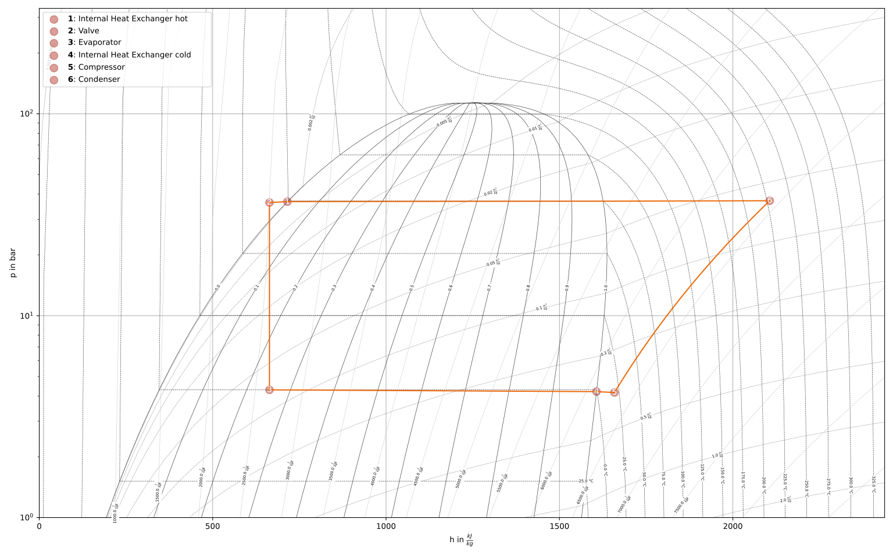
Figure: Logph diagram of ammonia¶
In addition to the fixed evaporation and condensation points, the fluids to be used, the feedflow and backflow temperatures of the consumer and heat source as well as the enthalpy between internal heat exchanger and valve have to be defined.
To correctly determine the enthalpies and pressures, CoolProp is to be imported. It is important to note that the PropertySI function (PropsSI) works with SI unit. These may differ from the units defined in the network.
import CoolProp.CoolProp as CP
# parametrization connections
# set feedflow and backflow temperature of heat source and consumer
T_hs_bf = 5
T_hs_ff = 10
T_cons_bf = 50
T_cons_ff = 90
# evaporation point
h_eva = CP.PropsSI('H', 'Q', 1, 'T', T_hs_bf - 5 + 273, 'NH3') * 1e-3
p_eva = CP.PropsSI('P', 'Q', 1, 'T', T_hs_bf - 5 + 273, 'NH3') * 1e-5
hs_eva2int_heatex.set_attr(x=1, p=p_eva)
# condensation point
h_cond = CP.PropsSI('H', 'Q', 0, 'T', T_cons_ff + 5 + 273, 'NH3') * 1e-3
p_cond = CP.PropsSI('P', 'Q', 0, 'T', T_cons_ff + 5 + 273, 'NH3') * 1e-5
cond2int_heatex.set_attr(p=p_cond)
# internal heat exchanger to valve
int_heatex2valve.set_attr(h=h_cond * 0.99, fluid={'water': 0, 'NH3': 1})
# consumer cycle
cond2cons_hs.set_attr(T=T_cons_ff, p=10, fluid={'water': 1, 'NH3': 0})
cons_hs2cons_feed.set_attr(T=T_cons_bf)
# heat source cycle
hs_feed2hs_pump.set_attr(T=T_hs_ff, p=1, fluid={'water': 1, 'NH3': 0})
hs_eva2hs_back.set_attr(T=T_hs_bf, p=1)
Some components have to be parameterized. For the heat source and heat sink recirculation pump as well as the conedenser the isentropic efficiency is to be set. Further we set the pressure ratios on hot and cold side for the condenser, evaporator and internal heat exchanger. The consumer will have pressure losses, too.
# parametrization components
# isentropic efficiency
cons_pump.set_attr(eta_s=0.8)
heatsource_pump.set_attr(eta_s=0.8)
compressor.set_attr(eta_s=0.85)
# pressure ratios
condenser.set_attr(pr1=0.99, pr2=0.99)
heatsource_evaporator.set_attr(pr1=0.98, pr2=0.98)
cons_heatsink.set_attr(pr=0.99)
int_heatex.set_attr(pr1=0.99, pr2=0.99)
The most important parameter is the consumers heat demand setting as “key parameter”. After that the network can be solved and a stable simulation can be used for further simulations.
# key parameter
cons_heatsink.set_attr(P.val=-1e6)
# solve the network
nw.solve('design')
nw.print_results()
# calculate and print COP
cop = abs(
cons_heatsink.P.val
/ (cons_pump.P.val + heatsource_pump.P.val + compressor.P.val)
)
print(f'COP = {cop:.4}')
After that, enthalpies and pressures can be set as “None” and the desired values for the upper or lower terminal temperature differences, references or other unstable values can be set for the actual simulation.
Combustion Chamber Tutorial¶
There are two different types of combustion chambers available:
Both can handle varying fluid compositions for the air and the fuel and
calculates the fluid composition of the flue gas. Thus, it is possible to e.g.
specify the oxygen mass fraction in the flue gas in a calculation. The
difference between the components lies in the fact, that the
CombustionChamber does not consider heat or pressure losses, while
DiabaticCombustionChamber does so. We provide a tutorial for both
components, where you learn how they work, and what the differences are.
CombustionChamber¶
The combustion chamber is an important component within thermal power plants, but unfortunately is the reason for many issues, as the solving algorithm is very sensitive to small changes e.g. the fluid composition. We will demonstrate how to handle the combustion chamber in a very small, simple example. You can download the full code from the tespy_examples repository.
First of all you need to define the network containing all fluid components used for the combustion chamber. These are at least the fuel, oxygen, carbon-dioxide and water. For this example we added Argon, and of course - as we are using Air for the combustion - Nitrogen.
from tespy.networks import Network
# define full fluid list for the network's variable space
fluid_list = ['Ar', 'N2', 'O2', 'CO2', 'CH4', 'H2O']
# define unit systems
nw = Network(fluids=fluid_list, p_unit='bar', T_unit='C')
As components there are two sources required, one for the fresh air, one for the fuel, a sink for the flue gas and the combustion chamber. Connect the components and add the connections to your network afterwards.
from tespy.components import Sink, Source, CombustionChamber
# sinks & sources
amb = Source('ambient')
sf = Source('fuel')
fg = Sink('flue gas outlet')
# combustion chamber
comb = CombustionChamber(label='combustion chamber')
from tespy.connections import Connection
amb_comb = Connection(amb, 'out1', comb, 'in1')
sf_comb = Connection(sf, 'out1', comb, 'in2')
comb_fg = Connection(comb, 'out1', fg, 'in1')
nw.add_conns(sf_comb, amb_comb, comb_fg)
For the parametrisation we specify the combustion chamber’s air to
stoichiometric air ratio lamb and the thermal input
( ).
).
# set combustion chamber air to stoichiometric air ratio and thermal input
comb.set_attr(lamb=3, ti=2e6)
The ambient conditions as well as the fuel gas inlet temperature are defined in the next step. The air and the fuel gas composition must fully be stated, the component combustion chamber can not handle “Air” as input fluid!
# air from ambient (ambient pressure and temperature), air composition must
# be stated component wise.
amb_comb.set_attr(p=1, T=20, fluid={'Ar': 0.0129, 'N2': 0.7553, 'H2O': 0,
'CH4': 0, 'CO2': 0.0004, 'O2': 0.2314})
# fuel, pressure must not be stated, as pressure is the same at all inlets
# and outlets of the combustion chamber
sf_comb.set_attr(T=25, fluid={'CO2': 0.04, 'Ar': 0, 'N2': 0, 'O2': 0,
'H2O': 0, 'CH4': 0.96})
Finally run the code:
nw.solve('design')
nw.print_results()
Of course, you can change the parametrisation in any desired way. For example instead of stating the thermal input, you could choose any of the mass flows, or instead of the air to stoichiometric air ratio you could specify the flue gas temperature. It is also possible to make modifications on the fluid composition, for example stating the oxygen content in the flue gas or to change the fuel composition. Make sure, all desired fuels of your fuel mixture are also within the fluid_list of the network. For the example below we added hydrogen to the fuel mixture.
from tespy.networks import Network
from tespy.components import Sink, Source, CombustionChamber
from tespy.connections import Connection
# %% network
fluid_list = ['Ar', 'N2', 'O2', 'CO2', 'CH4', 'H2O', 'H2']
nw = Network(fluids=fluid_list, p_unit='bar', T_unit='C')
# %% components
# sinks & sources
amb = Source('ambient')
sf = Source('fuel')
fg = Sink('flue gas outlet')
# combustion chamber
comb = CombustionChamber(label='combustion chamber')
# %% connections
amb_comb = Connection(amb, 'out1', comb, 'in1')
sf_comb = Connection(sf, 'out1', comb, 'in2')
comb_fg = Connection(comb, 'out1', fg, 'in1')
nw.add_conns(sf_comb, amb_comb, comb_fg)
# %% component parameters
# set combustion chamber air to stoichometric air ratio and thermal input
comb.set_attr(lamb=3, ti=2e6)
# %% connection parameters
amb_comb.set_attr(p=1, T=20, fluid={'Ar': 0.0129, 'N2': 0.7553, 'H2O': 0,
'CH4': 0, 'CO2': 0.0004, 'O2': 0.2314,
'H2': 0})
sf_comb.set_attr(T=25, fluid={'CO2': 0, 'Ar': 0, 'N2': 0,'O2': 0, 'H2O': 0,
'CH4': 0.95, 'H2': 0.05})
# %% solving
nw.solve('design')
nw.print_results()
DiabaticCombustionChamber¶
The example for the diabatic combustion chamber can as well be taken from the tespy_examples repository.
The setup of the network, connections and components is identical to the
first setup, therefore we skip over that part in this section. Note, that
instead of CombustionChamber we are importing the component
DiabaticCombustionChamber. Since heat losses and pressure losses are
considered in this component, we have to make additional assumptions to
simulate it. First, we will make run the simulation with inputs in a way, that
the outcome is identical to the behavior of the adiabatic version without
pressure losses as described above.
As in the example above, we also specify thermal input and lambda, as well as
identical parameters for the connections. Furthermore, we specify the efficiency
eta of the component, which determines the heat loss as ratio of the
thermal input. eta=1 means, no heat losses, thus adiabatic behavior.
On top of that, we set the pressure ratio pr, which describes the
ratio of the pressure at the outlet to the pressure at the inlet 1. The
pressure value at the inlet 2 is detached from the other pressure values, it
must be a result of a different parameter specification. In this example, we
set it directly. To match the inputs of the first tutorial, we set
pr=1 and p=1 for connection sf_comb.
Note
A warning message is promted at the end of the simulation, if the pressure of the inlet 2 is lower or equal to the pressure of inlet 1.
from tespy.networks import Network
from tespy.components import Sink, Source, DiabaticCombustionChamber
from tespy.connections import Connection
# %% network
fluid_list = ['Ar', 'N2', 'O2', 'CO2', 'CH4', 'H2O', 'H2']
nw = Network(fluids=fluid_list, p_unit='bar', T_unit='C')
# %% components
# sinks & sources
amb = Source('ambient')
sf = Source('fuel')
fg = Sink('flue gas outlet')
# combustion chamber
comb = DiabaticCombustionChamber(label='combustion chamber')
# %% connections
amb_comb = Connection(amb, 'out1', comb, 'in1')
sf_comb = Connection(sf, 'out1', comb, 'in2')
comb_fg = Connection(comb, 'out1', fg, 'in1')
nw.add_conns(sf_comb, amb_comb, comb_fg)
# set combustion chamber air to stoichometric air ratio, thermal input
# and efficiency
comb.set_attr(lamb=3, ti=2e6, eta=1, pr=1)
# %% connection parameters
amb_comb.set_attr(p=1, T=20, fluid={'Ar': 0.0129, 'N2': 0.7553, 'H2O': 0,
'CH4': 0, 'CO2': 0.0004, 'O2': 0.2314,
'H2': 0})
sf_comb.set_attr(p=1, T=25, fluid={'CO2': 0, 'Ar': 0, 'N2': 0,'O2': 0,
'H2O': 0, 'CH4': 0.95, 'H2': 0.05})
# %% solving
nw.solve('design')
nw.print_results()
Now, consider heat loss of the surface of the component. This is simply done by
specifying the value for eta. We assume 4 % of thermal input as heat
loss and set that value accordingly. Furthermore, the pressure of the fuel is
set to 1.5 bar. The air inlet pressure will be the result of the specified
pressure ratio and the outlet pressure assuming 2 % pressure losses. All
other parameters stay untouched.
comb.set_attr(eta=0.96, pr=0.98)
amb_comb.set_attr(p=None)
sf_comb.set_attr(p=1.5)
comb_fg.set_attr(p=1.0)
nw.solve('design')
nw.print_results()
Thermal Power Plant Efficiency Optimization¶
Task¶
Designing a power plant meets multiple different tasks, such as finding the optimal fresh steam temperature and pressure to reduce exhaust steam water content, or the optimization of extraction pressures to maximize cycle efficiency and many more.
In case of a rather simple power plant topologies the task of finding optimized values for e.g. extraction pressures is still manageable without any optimization tool. As the topology becomes more complex and boundary conditions come into play the usage of additional tools is recommended. The following tutorial is intended to show the usage of PyGMO in combination with TESPy to maximize the cycle efficiency of a power plant with two extractions.
The source code can be found at the tespy_examples repository.
Figure: Topology of the power plant.¶
What is PyGMO?¶
PyGMO (Python Parallel Global Multiobjective Optimizer, [BI20]) is a library that provides a large number of evolutionary optimization algorithms. PyGMO can be used to solve constrained, unconstrained, single objective and multi objective problems.
Evolutionary Algorithms¶
Evolutionary Algorithms (EA) are optimization algorithms inspired by biological evolution. In a given population the algorithm uses the so called fitness function to determine the quality of the solutions to each individual (set of decision variables) problem. The best possible solution of the population is called champion. Via mutation, recombination and selection your population evolves to find better solutions.
EA will never find an exact solution to your problem. They can only give an approximation for the real optimum.
Install PyGMO¶
Conda¶
With the conda package manager PyGMO is available for Linux, OSX and Windows thanks to the infrastructure of conda-forge:
conda install -c conda-forge pygmo
pip¶
On Linux you also have the option to use the pip package installer:
pip install pygmo
Windows user can perform an installation from source as an alternative to conda. For further information on this process we recommend the PyGMO installation accordingly.
Creating your TESPy-Model¶
It is necessary to use object oriented programming in PyGMO. Therefore we create
a class PowerPlant which contains our TESPy-Model and a function to
return the cycle efficiency.
from tespy.networks import Network
from tespy.components import (
Turbine, Splitter, Merge, Condenser, Pump, Sink, Source,
HeatExchangerSimple, Desuperheater, CycleCloser
)
from tespy.connections import Connection, Bus
from tespy.tools import logger
import logging
import numpy as np
logger.define_logging(screen_level=logging.ERROR)
class PowerPlant():
def __init__(self):
self.nw = Network(
fluids=['BICUBIC::water'],
p_unit='bar', T_unit='C', h_unit='kJ / kg',
iterinfo=False)
# components
# main cycle
eco = HeatExchangerSimple('economizer')
eva = HeatExchangerSimple('evaporator')
sup = HeatExchangerSimple('superheater')
cc = CycleCloser('cycle closer')
hpt = Turbine('high pressure turbine')
sp1 = Splitter('splitter 1', num_out=2)
mpt = Turbine('mid pressure turbine')
sp2 = Splitter('splitter 2', num_out=2)
lpt = Turbine('low pressure turbine')
con = Condenser('condenser')
pu1 = Pump('feed water pump')
fwh1 = Condenser('feed water preheater 1')
fwh2 = Condenser('feed water preheater 2')
dsh = Desuperheater('desuperheater')
me2 = Merge('merge2', num_in=2)
pu2 = Pump('feed water pump 2')
pu3 = Pump('feed water pump 3')
me = Merge('merge', num_in=2)
# cooling water
cwi = Source('cooling water source')
cwo = Sink('cooling water sink')
# connections
# main cycle
cc_hpt = Connection(cc, 'out1', hpt, 'in1', label='feed steam')
hpt_sp1 = Connection(hpt, 'out1', sp1, 'in1', label='extraction1')
sp1_mpt = Connection(sp1, 'out1', mpt, 'in1', state='g')
mpt_sp2 = Connection(mpt, 'out1', sp2, 'in1', label='extraction2')
sp2_lpt = Connection(sp2, 'out1', lpt, 'in1')
lpt_con = Connection(lpt, 'out1', con, 'in1')
con_pu1 = Connection(con, 'out1', pu1, 'in1')
pu1_fwh1 = Connection(pu1, 'out1', fwh1, 'in2')
fwh1_me = Connection(fwh1, 'out2', me, 'in1', state='l')
me_fwh2 = Connection(me, 'out1', fwh2, 'in2', state='l')
fwh2_dsh = Connection(fwh2, 'out2', dsh, 'in2', state='l')
dsh_me2 = Connection(dsh, 'out2', me2, 'in1')
me2_eco = Connection(me2, 'out1', eco, 'in1', state='l')
eco_eva = Connection(eco, 'out1', eva, 'in1')
eva_sup = Connection(eva, 'out1', sup, 'in1')
sup_cc = Connection(sup, 'out1', cc, 'in1')
self.nw.add_conns(cc_hpt, hpt_sp1, sp1_mpt, mpt_sp2, sp2_lpt,
lpt_con, con_pu1, pu1_fwh1, fwh1_me, me_fwh2,
fwh2_dsh, dsh_me2, me2_eco, eco_eva, eva_sup, sup_cc)
# cooling water
cwi_con = Connection(cwi, 'out1', con, 'in2')
con_cwo = Connection(con, 'out2', cwo, 'in1')
self.nw.add_conns(cwi_con, con_cwo)
# preheating
sp1_dsh = Connection(sp1, 'out2', dsh, 'in1')
dsh_fwh2 = Connection(dsh, 'out1', fwh2, 'in1')
fwh2_pu2 = Connection(fwh2, 'out1', pu2, 'in1')
pu2_me2 = Connection(pu2, 'out1', me2, 'in2')
sp2_fwh1 = Connection(sp2, 'out2', fwh1, 'in1')
fwh1_pu3 = Connection(fwh1, 'out1', pu3, 'in1')
pu3_me = Connection(pu3, 'out1', me, 'in2')
self.nw.add_conns(sp1_dsh, dsh_fwh2, fwh2_pu2, pu2_me2,
sp2_fwh1, fwh1_pu3, pu3_me)
# busses
# power bus
self.power = Bus('power')
self.power.add_comps(
{'comp': hpt, 'char': -1}, {'comp': mpt, 'char': -1},
{'comp': lpt, 'char': -1}, {'comp': pu1, 'char': -1},
{'comp': pu2, 'char': -1}, {'comp': pu3, 'char': -1})
# heating bus
self.heat = Bus('heat')
self.heat.add_comps(
{'comp': eco, 'char': 1}, {'comp': eva, 'char': 1},
{'comp': sup, 'char': 1})
self.nw.add_busses(self.power, self.heat)
# parametrization
# components
hpt.set_attr(eta_s=0.9)
mpt.set_attr(eta_s=0.9)
lpt.set_attr(eta_s=0.9)
pu1.set_attr(eta_s=0.8)
pu2.set_attr(eta_s=0.8)
pu3.set_attr(eta_s=0.8)
eco.set_attr(pr=0.99)
eva.set_attr(pr=0.99)
sup.set_attr(pr=0.99)
con.set_attr(pr1=1, pr2=0.99, ttd_u=5)
fwh1.set_attr(pr1=1, pr2=0.99, ttd_u=5)
fwh2.set_attr(pr1=1, pr2=0.99, ttd_u=5)
dsh.set_attr(pr1=0.99, pr2=0.99)
# connections
eco_eva.set_attr(x=0)
eva_sup.set_attr(x=1)
cc_hpt.set_attr(m=200, T=650, p=100, fluid={'water': 1})
hpt_sp1.set_attr(p=20)
mpt_sp2.set_attr(p=3)
lpt_con.set_attr(p=0.05)
cwi_con.set_attr(T=20, p=10, fluid={'water': 1})
def calculate_efficiency(self, x):
# set extraction pressure
self.nw.get_conn('extraction1').set_attr(p=x[0])
self.nw.get_conn('extraction2').set_attr(p=x[1])
self.nw.solve('design')
# components are saved in a DataFrame, column 'object' holds the
# component instances
for cp in self.nw.comps['object']:
if isinstance(cp, Condenser) or isinstance(cp, Desuperheater):
if cp.Q.val > 0:
return np.nan
elif isinstance(cp, Pump):
if cp.P.val < 0:
return np.nan
elif isinstance(cp, Turbine):
if cp.P.val > 0:
return np.nan
if self.nw.res[-1] > 1e-3 or self.nw.lin_dep:
return np.nan
else:
return self.nw.busses['power'].P.val / self.nw.busses['heat'].P.val
Note, that you have to label all busses and connections you want to access
later on with PyGMO. In calculate_efficiency(self, x) the variable
x is a list containing your decision variables. This function returns
the cycle efficiency for a specific set of decision variables. The efficiency
is defined by the ratio of total power transferred (including turbines and
pumps) to steam generator heat input.
Additionally, we have to make sure, only the result of physically feasible
solutions is returned. In case we have infeasible solutions, we can simply
return np.nan. An infeasible solution is obtained in case the power
of a turbine is positive, the power of a pump is negative or the heat exchanged
in any of the preheaters is positive. We also check, if the calculation does
converge.
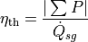
Creating your PyGMO-Model¶
The optimization in PyGMO starts by defining the problem. You can set the
number of objectives your problem has in get_nobj(). The number of
constraints is set in get_nec() (equality constraints) and
get_nic() (inequality constraints). In get_bounds() you set the
bounds of your decision variables. Finally, you define your fitness function
and constraints in fitness(self, x):
import pygmo as pg
class optimization_problem():
def fitness(self, x):
f1 = 1 / self.model.calculate_efficiency(x)
ci1 = -x[0] + x[1]
print(x)
return [f1, ci1]
def get_nobj(self):
"""Return number of objectives."""
return 1
# equality constraints
def get_nec(self):
return 0
# inequality constraints
def get_nic(self):
return 1
def get_bounds(self):
"""Return bounds of decision variables."""
return ([1, 1], [40, 40])
By default PyGMO minimizes the fitness function. Therefore we set the fitness function f1 to the reciprocal of the cycle efficiency. We set one inequality constraint so that the pressure of the first extraction has to be bigger than the second one:
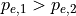
In PyGMO your inequality constraint has to be in form of <0:
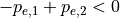
We expect that the extraction pressure won’t be more than 40 bar and not less 1 bar. Therefore we set the bounds of our decision variables:
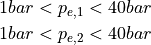
Run PyGMO-Optimization¶
The following code shows how to run the PyGMO optimization.
optimize = optimization_problem()
optimize.model = PowerPlant()
prob = pg.problem(optimize)
num_gen = 15
pop = pg.population(prob, size=10)
algo = pg.algorithm(pg.ihs(gen=num_gen))
With optimize you tell PyGMO which problem you want to optimize. In the class
optimization_problem() we defined our problem be setting fitness
function and inequality constraint. With optimize.model we set the
model we want to optimize. In our case we want to optimize the extraction
pressures in our instance of class PowerPlant. Finally, our problem is
set in prob = pg.problem(optimize).
With pop we define the size of each population for the optimization,
algo is used to set the algorithm you want to use. A list of available
algorithms can be found in
List of algorithms.
The choice of your algorithm depends on the type of problem. Have you set
equality or inequality constraints? Do you perform a single- or multi-objective
optimization?
We choose a population size of 10 individuals and want to carry out 15 generations. We can evolve the population generation by generation, e.g. using a for loop. At the end, we print out the information of the best individual.
for gen in range(num_gen):
print('Evolution: {}'.format(gen))
print('Efficiency: {} %'.format(round(100 / pop.champion_f[0], 4)))
pop = algo.evolve(pop)
print()
print('Efficiency: {} %'.format(round(100 / pop.champion_f[0], 4)))
print('Extraction 1: {} bar'.format(round(pop.champion_x[0], 4)))
print('Extraction 2: {} bar'.format(round(pop.champion_x[1], 4)))
In our run, we got:
Efficiency: 44.8596 %
Extraction 1: 25.8585 bar
Extraction 2: 2.6903 bar
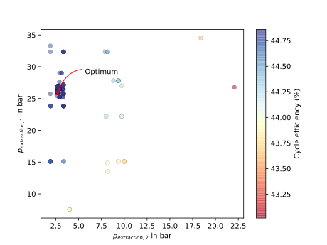
Figure: Scatter plot for all individuals during the optimization.¶
Exergy Analysis of a Ground-Coupled Heat Pump¶
Task¶
This tutorial shows how to set up and carry out an exergy analysis for a ground-coupled heat pump (GCHP). In addition, various post-processing options are presented. To investigate the impact of refrigerant choice on COP and exergetic efficiency, two Python scripts of the same network with different refrigerants (NH3 and R410A) are created. Finally, the influence of varying different parameters on COP and exergetic efficiency is investigated and plotted.
Note
Please note, currently this tutorial is intended to show the user, how to carry out an exergy analysis for a simple system and how to use this toolbox in several investigations of a specific system. While there is a very short description of the setup, methodology and results, an in-depth discussion of the method and the results is not yet provided. If you would like to add this to the documentation you are welcome to contact us via our GitHub.
Since there is an existing tutorial for creating a heat pump, this tutorial starts with the explanations for setting up the exergy analysis. Note, however, that the heat pump model differs slightly in structure from the model in the previous tutorial. All related Python scripts of the fully working GCHP-model are listed in the following:
GCHP with NH3 (the model only):
NH3GCHP with R410A (the model only):
R410AGCHP with NH3 (model and post-processing):
NH3_calculationsGCHP with R410A (model and post-processing):
R410A_calculationsPlots of the results of the parameter variations:
plots
The figure below shows the topology of the GCHP. In this model, a ground-coupled heat pump is modeled, which is for instance connected to a single-family house with underfloor heating. The heating system represents the heat demand of the house. The geothermal heat collector is represented by a ground heat feed flow (Source) and return flow (Sink). The heat pump circuit consists of the basic components: condenser, expansion valve, evaporator and compressor.
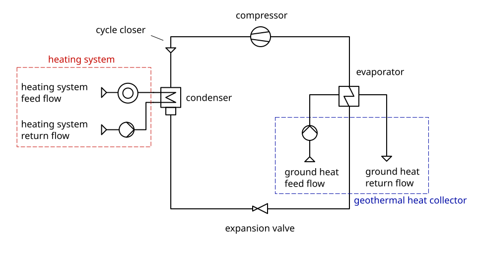
Figure: Topology of the Ground-Couped Heat Pump (GCHP).¶
The input data of the model are based on different literature. In general, the model of the GCHP is based on a data sheet of a real heat pump (Viessmann Vitocal 300-G ). However, the data are used as approximate values to create a model that works with both NH3 and R410A, although the mentioned heat pump is designed to use R410A. The range of the underfloor heating system temperature and the range of the geothermal temperature are assumptions based on measured data from the research project WPsmart and [CH15]. The average outdoor temperature is taken from [CH15].
TESPy model¶
In principle, the GCHP-model corresponds to the flowsheet shown above.
The heating system and the geothermal heat collector can be modeled as sources
and sinks, which represent the feed and the return flow in both cases.
The condenser is modeled as Condenser instance, while the evaporator
is modeled using HeatExchanger instance. In total, the TESPy model
consists of 11 components.
In real systems, the circulating brine in the geothermal collector usually consists of a mixture of water and antifreeze. Since the calculation with mixtures of incompressible fluids is not yet fully implemented in TESPy, pure water is used as the circulating fluid in this network. In fact, some geothermal collectors are filled with water, provided that the ground temperature is high enough throughout the year, such as in [CH15].
The following parameter specifications were made for the design case calculation:
isentropic efficiency values
electrical conversion efficiencies of compressor and pumps
terminal temperature difference values at condenser and evaporator
pressure losses in condenser and evaporator
hot and cold side heat transfer coefficients of evaporator
temperature difference to boiling point of refrigerant at compressor inlet
temperatures and pressure of heating system feed and return flow
temperatures and pressure of geothermal heat collector feed and return flow
condenser heat output
The model using NH3 as refrigerant and the model using R410A as refrigerant differ in the fluid definition, the naming of the stored files and the specification of the starting values only. The definition of the starting values is necessary to obtain a numerical solution for the first calculation. In this tutorial, the given code examples are shown exemplary for the model with NH3 as refrigerant only.
The units used and the ambient state are defined as follows:
nw = Network(fluids=['water', 'NH3'], T_unit='C', p_unit='bar',
h_unit='kJ / kg', m_unit='kg / s')
pamb = 1.013
Tamb = 2.8
For the model using R410A as refrigerant, the fluid definition is accordingly
'R410A' instead of 'NH3'.
The temperature of the heating system feed flow is set to 40°C in design calculation. The difference between feed and return flow temperature is kept constant at 5°C. Therefore the return flow is set to 35°C.
The geothermal heat collector temperature is defined as follows:
Tgeo = 9.5
Tgeo is the mean geothermal temperature. The difference between
feed and return flow temperature is kept constant at 3°C. Therefore, the feed
flow temperature in the design calculation is set to Tgeo + 1.5°C and
the return flow temperature is set to Tgeo - 1.5°C.
The complete Python code of the TESPy models is available in the scripts
NH3.py with NH3 as refrigerant and
R410A.py with R410A as refrigerant. All
other specified values of the component and connection parameters can be found
in these Python scripts.
In the scripts
NH3_calculations.py and
R410A_calculations.py,
the Python code of the TESPy models of the GCHP is extended to handle the
different tasks mentioned in the introduction. In these two scripts you can
find the corresponding Python code for all calculations that will be presented
in the next sections of the tutorial. As previously mentioned, the given code
examples in the following are only shown exemplary for the GCHP with NH3 as
refrigerant. If the scripts differ beyond the mentioned points, it will be
pointed out at the respective place of the tutorial.
h-log(p)-diagram¶
At first, we will have a short look at the h-log(p)-diagram of the process, exemplary for NH3 as working fluid. Such diagrams are useful to better understand a process, therefore we will quickly present how to generate it using TESPy with fluprodia. For more information and installation instructions for fluprodia please have a look at the online documentation.
The data for the diagram are first saved in a dictionary result_dict
using the get_plotting_data method of each component that is to be
visualized.
from fluprodia import FluidPropertyDiagram
result_dict = {}
result_dict.update({ev.label : ev.get_plotting_data()[2]})
result_dict.update({cp.label : cp.get_plotting_data()[1]})
result_dict.update({cd.label : cd.get_plotting_data()[1]})
result_dict.update({va.label : va.get_plotting_data()[1]})
Note
The first level key of the nested dictionary returned from the
get_plotting_data method contains the connection id of the state
change. Make sure you specify the correct id for the components to be
displayed. A table of the state change and the respective id can be found
here.
Next, a FluidPropertyDiagram instance is created and the units of the
diagram are specified.
diagram = FluidPropertyDiagram('NH3')
diagram.set_unit_system(T='°C', p='bar', h='kJ/kg')
Afterwards, the dictionary can be passed to the calc_individual_isoline
method of the FluidPropertyDiagram object. In addition, the axis
limits are set. The calc_isolines method calculates all isolines of the
diagram and the draw_isolines method draws the isolines of the
specified type. Finally, the results can be plotted and the diagram can be
saved with the code shown below.
for key, data in result_dict.items():
result_dict[key]['datapoints'] = diagram.calc_individual_isoline(**data)
diagram.set_limits(x_min=0, x_max=2100, y_min=1e0, y_max=2e2)
diagram.calc_isolines()
diagram.draw_isolines('logph')
for key in result_dict.keys():
datapoints = result_dict[key]['datapoints']
diagram.ax.plot(datapoints['h'],datapoints['p'], color='#ff0000')
diagram.ax.scatter(datapoints['h'][0],datapoints['p'][0], color='#ff0000')
diagram.save('NH3_logph.svg')
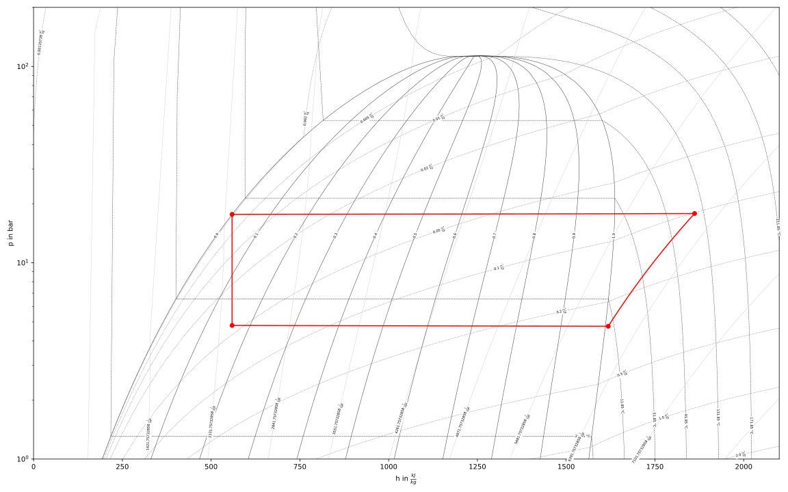
Figure: h-log(p) diagram of the NH3 GCHP.¶
The resulting fluid property diagram is shown in the figure above. It can easily be seen, that the evaporator slightly overheats the working fluid, while the it leaves the condenser in saturated liquid state. The working fluid temperature after leaving the compressor is quite high with far more than 100 °C given the heat sink only requires a temperature of only 40 °C. In comparison, the R410A leaves the compressor at about 75 °C.
More examples of creating fluid property diagrams can be found in the fluprodia documentation referenced above.
Exergy analysis¶
Following, the main tasks of this tutorial are presented. First, the exergy analysis is set up for the respective network and carried out for the base case. Subsequently, the influence of different parameters such as temperature of the heat source and sink as well as ambient temperature and part load operation of the heat pump regarding exergetic efficiency are investigated.
Analysis setup¶
After the network has been built, the exergy analysis can be set up. For this purpose, all exergy flows entering and leaving the network must be defined. The exergy flows are defined as a list of busses as follows:
fuel exergy
E_Fproduct exergy
E_Pexergy loss streams
E_Linternal exergy streams not bound to connections
internal_busses
First, the busses for the exergy analysis must be defined. The first bus is for the electrical energy supply of the compressor and the pumps. The motor efficiency is calculated by a characteristic line. This power input bus represents fuel exergy.
The product exergy is the heat supply of the condenser to the heating system,
which is represented by the heating system bus. The bus consists of the
streams hs_ret and hs_feed. Note that the base
keyword of the stream entering the network hs_ret must be set to
bus.
Lastly, the geothermal heat bus represents the heat that is transferred from
the geothermal heat collector to the evaporator. The bus consists of the
streams gh_in and gh_out. Here, the base of the stream
gh_in is set to bus, because this stream represents an energy
input from outside of the network. In this example, the geothermal heat bus is
defined as fuel exergy, because the ambient temperature Tamb is set at
a lower temperature than the temperature of the geothermal heat collector.
x = np.array([0, 0.2, 0.4, 0.6, 0.8, 1, 1.2])
y = np.array([0, 0.86, 0.9, 0.93, 0.95, 0.96, 0.95])
char = CharLine(x=x, y=y)
power = Bus('power input')
power.add_comps({'comp': cp, 'char': char, 'base': 'bus'},
{'comp': ghp, 'char': char, 'base': 'bus'},
{'comp': hsp, 'char': char, 'base': 'bus'})
heat_cons = Bus('heating system')
heat_cons.add_comps({'comp': hs_ret, 'base': 'bus'}, {'comp': hs_feed})
heat_geo = Bus('geothermal heat')
heat_geo.add_comps({'comp': gh_in, 'base': 'bus'},
{'comp': gh_out})
nw.add_busses(power, heat_cons, heat_geo)
In order to carry out the exergy analysis an ExergyAnalysis instance
passing the network to analyse as well as the respective busses is created.
The product exergy is represented by the bus power. The busses
heat_cons and heat_geo are passed as fuel exergy.
In the example of the GCHP, only E_F and E_P are defined.
Other examples of exergy analysis setup can be found in the
TESPy analysis page and in the API
documentation of class tespy.tools.analyses.ExergyAnalysis.
ean = ExergyAnalysis(network=nw,
E_F=[power, heat_geo],
E_P=[heat_cons])
ean.analyse(pamb, Tamb)
The tespy.tools.analyses.ExergyAnalysis.analyse() method will run the
exergy analysis automatically. This method expects information about the
ambient pressure and ambient temperature. Additionally, an automatic check of
consistency is performed by the analysis as further described in
TESPy analysis.
Results¶
The results can be printed by using the
tespy.tools.analyses.ExergyAnalysis.print_results() method.
ean.print_results()
Further descriptions of which tables are printed and how to select what is printed can be found in the TESPy analysis section. There you can also find more detailed descriptions of how to access the underlying data for the tabular printouts, which are stored in pandas DataFrames.
With the plotly library installed, the results can
also be displayed in a sankey diagram.
The tespy.tools.analyses.ExergyAnalysis.generate_plotly_sankey_input()
method returns a dictionary containing links and nodes for the sankey diagram.
links, nodes = ean.generate_plotly_sankey_input()
fig = go.Figure(go.Sankey(
arrangement="snap",
node={
"label": nodes,
'pad': 11,
'color': 'orange'},
link=links))
plot(fig, filename='NH3_sankey')
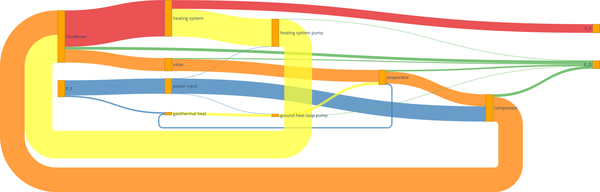
Figure: Sankey diagram of the GCHP (open in new tab to enlarge).¶
In the figure above you can see the sankey diagram which is created by running the script of the GCHP with NH3 as refrigerant. Information about, for example, the colors used or the node order can be found in the TESPy analysis section.
Post-Processing¶
Below, different possibilities of post-processing and visualization of the exergy analysis results will be presented. The following issues will be considered:
plot exergy destruction
varying ambient and geothermal temperature
varying geothermal and heating system temperature
varying heating load and geothermal temperature
In order to be able to compare the results of the two refrigerants NH3 and
R410A, plots of the results of the mentioned issues are created in a separate
plot script plots.py. The plots in this
tutorial are created with Matplotlib. For
installation instructions or further documentation please see the Matplotlib
documentation.
For the post-processing, the following additional packages are required:
import numpy as np
import pandas as pd
import matplotlib.pyplot as plt
Plot exergy destruction¶
In order to visualize how much exergy of the fuel exergy E_F the
individual components of the GCHP destroy, the exergy destruction E_D
can be displayed in a bar chart as shown at the end of this section.
To create this diagram, the required data for the diagram must first be
handled. As shown below, the three lists comps, E_D and
E_P are created and first filled with the values for the top bar. A
loop is then used to add all component labels to the list comps that
destroy a noticeable amount of exergy (> 1W). The list E_D contains
the corresponding values of the destroyed exergy. List E_P, in turn,
contains the value of the exergy that remains after subtracting the destroyed
exergy from the fuel exergy.
comps = ['E_F']
E_F = ean.network_data.E_F
E_D = [0]
E_P = [E_F]
for comp in ean.component_data.index:
# only plot components with exergy destruction > 1 W
if ean.component_data.E_D[comp] > 1 :
comps.append(comp)
E_D.append(ean.component_data.E_D[comp])
E_F = E_F-ean.component_data.E_D[comp]
E_P.append(E_F)
comps.append("E_P")
E_D.append(0)
E_P.append(E_F)
With regard to the bar chart to be created, the filled lists are then saved in
a panda DataFrame and exported to a .csv file. Exporting the data is
necessary in order to be able to use the results of the two scripts of the
different refrigerants NH3 and R410A in a separate script.
df_comps = pd.DataFrame(columns= comps)
df_comps.loc["E_D"] = E_D
df_comps.loc["E_P"] = E_P
df_comps.to_csv('NH3_E_D.csv')
Note
In order to be able to use the data from the data frames in a separate script for plot creation, all data frames must be saved as a file with their own individual name.
In the separate plot script (plots.py) the .csv files can
now be re-imported to create plots with Matplotlib. The Python code for
creating the bar chart is included in the previously referenced plot script
and can be found there. For more information on creating plots with
Matplotlib, please check the
Matplotlib documentation. The resulting bar chart
is shown below.
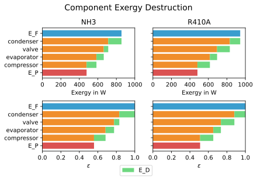
Figure: Comparison of exergy destruction and exergy efficiency of both working fluids in design case.¶
The bar chart shows how much exergy the individual components of the GCHP
destroy in absolute terms and as a percentage of the fuel exergy E_F.
After deducting the destroyed exergy E_D, the product exergy
E_P remains. Overall, it is noticeable that the GCHP with NH3 requires
less fuel exergy than the GCHP with R410A, with the same amount of product
exergy. Furthermore, with NH3 the condenser has the highest exergy destruction,
whereas with R410A the valve destroys the largest amount of exergy.
Varying ambient and geothermal temperature¶
In order to consider the influence of a change in ambient temperature or
geothermal temperature on the exergetic efficiency, offdesign calculations are
performed with different values of these parameters. The first step is to
create dataframes as shown below. The ambient temperature Tamb
is varied between 1°C and 20°C. The mean geothermal temperature Tgeo
is varied between 11.5°C and 6.5°C. Note that the geothermal temperature
Tgeo is given as a mean value of the feed an return flow temperatures,
as described in the beginning of this tutorial.
Tamb_design = Tamb
Tgeo_design = Tgeo
i = 0
# create data ranges and frames
Tamb_range = np.array([1,4,8,12,16,20])
Tgeo_range = np.array([11.5, 10.5, 9.5, 8.5, 7.5, 6.5])
df_eps_Tamb = pd.DataFrame(columns= Tamb_range)
df_eps_Tgeo = pd.DataFrame(columns= Tgeo_range)
Next, the exergetic efficiency epsilon can be calculated for the different
values of Tamb in Tamb_range by calling the
tespy.tools.analyses.ExergyAnalysis.analyse() method in a loop. The
results are saved in the created dataframe and exported to a .csv file.
# calculate epsilon depending on Tamb
eps_Tamb = []
print("Varying ambient temperature:\n")
for Tamb in Tamb_range:
i += 1
ean.analyse(pamb, Tamb)
eps_Tamb.append(ean.network_data.epsilon)
print("Case %d: Tamb = %.1f °C"%(i,Tamb))
# save to data frame
df_eps_Tamb.loc[Tgeo_design] = eps_Tamb
df_eps_Tamb.to_csv('NH3_eps_Tamb.csv')
Note
If only the ambient state (temperature or pressure) changes, there is no
need to create a new ExergyAnalysis instance. Instead, you can
simply call the tespy.tools.analyses.ExergyAnalysis.analyse()
method with the new ambient state. A new instance only needs to be created
when there are changes in the topology of the network.
The following calculation of the network with different geothermal mean
temperatures is carried out as an offdesign calculation. Again, no new
ExergyAnalysis instance needs to be created. The ambient temperature
Tamb is reset to the design value.
# calculate epsilon depending on Tgeo
eps_Tgeo = []
print("\nVarying mean geothermal temperature:\n")
for Tgeo in Tgeo_range:
i += 1
# set feed and return flow temperatures around mean value Tgeo
gh_in_ghp.set_attr(T=Tgeo+1.5)
ev_gh_out.set_attr(T=Tgeo-1.5)
nw.solve('offdesign', init_path=path, design_path=path)
ean.analyse(pamb, Tamb_design)
eps_Tgeo.append(ean.network_data.epsilon)
print("Case %d: Tgeo = %.1f °C"%(i,Tgeo))
# save to data frame
df_eps_Tgeo.loc[Tamb_design] = eps_Tgeo
df_eps_Tgeo.to_csv('NH3_eps_Tgeo.csv')
The results of the calculation can be plotted as shown in the following
figure. The related Python code to create this plot can be found in the plot
script (plots.py). For further documentation
please see the Matplotlib documentation.
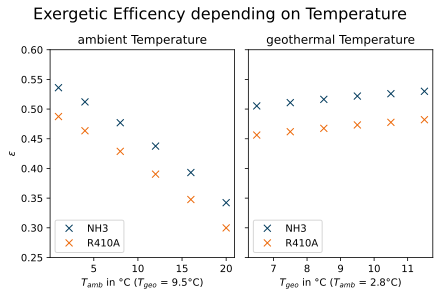
Figure: Varying ambient and geothermal temperature.¶
It can be recognized that the specified ambient temperature Tamb used
in the analyse method of the ExergyAnalysis instance has a
considerable influence on the exergetic efficiency epsilon. The closer the
ambient temperature is to the temperature of the heating system, the lower the
exergetic efficiency. This can be argued from the fact that while E_F
and E_P both decrease with increasing Tamb, E_P
decreases proportionally more than E_F. In comparison, it can be seen
on the right that with increasing Tgeo, and thus decreasing
temperature difference between geothermal heat collector and heating system,
epsilon increases. This can be explained by the resulting decrease in
E_F with E_P remaining constant.
Varying geothermal and heating system temperature¶
Another relation that can be investigated is the influence of a change in the
geothermal and the heating system temperatures on the exergetic efficiency and
the COP of the GCHP. Again, the first step is to create data frames. In this
calculation Tgeo is varied between 10.5°C and 6.5°C. The heating
system temperature Ths is varied between 42.5°C and 32.5°C. As before,
all temperature values are mean values of the feed and return flow
temperatures.
# create data ranges and frames
Tgeo_range = [10.5, 8.5, 6.5]
Ths_range = [42.5, 37.5, 32.5]
df_eps_Tgeo_Ths = pd.DataFrame(columns= Ths_range)
df_cop_Tgeo_Ths = pd.DataFrame(columns= Ths_range)
The values of Tgeo and Ths are varied simultaneously within
the specified range and again the exergetic efficiency is calculated. In
addition, the COP is calculated for each parameter combination. The data is
stored in two dataframes with the range of Tgeo as rows and the range
of Ths as columns.
# calculate epsilon and COP
print("\nVarying mean geothermal temperature and "+
"heating system temperature:\n")
for Tgeo in Tgeo_range:
# set feed and return flow temperatures around mean value Tgeo
gh_in_ghp.set_attr(T=Tgeo+1.5)
ev_gh_out.set_attr(T=Tgeo-1.5)
epsilon = []
cop = []
for Ths in Ths_range:
i += 1
cd_hs_feed.set_attr(T=Ths+2.5)
hs_ret_hsp.set_attr(T=Ths-2.5)
if Ths == Ths_range[0]:
nw.solve('offdesign', init_path=path, design_path=path)
else:
nw.solve('offdesign', design_path=path)
ean.analyse(pamb, Tamb_design)
epsilon.append(ean.network_data.epsilon)
cop += [abs(cd.Q.val) / (cp.P.val + ghp.P.val + hsp.P.val)]
print("Case %d: Tgeo = %.1f °C, Ths = %.1f °C"%(i,Tgeo,Ths))
# save to data frame
df_eps_Tgeo_Ths.loc[Tgeo] = epsilon
df_cop_Tgeo_Ths.loc[Tgeo] = cop
df_eps_Tgeo_Ths.to_csv('NH3_eps_Tgeo_Ths.csv')
df_cop_Tgeo_Ths.to_csv('NH3_cop_Tgeo_Ths.csv')
The results of this calculation are shown in the following figure. The
corresponding Python code can likewise be found in the plot script
(plots.py).
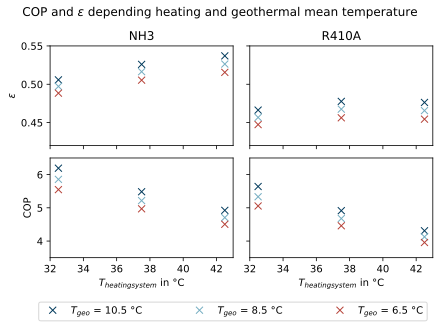
Figure: Varying geothermal and heating system temperature.¶
It can be seen that the GCHP with NH3 has a better exergetic efficiency than
with R410A. As in the prior investigation, an increasing geothermal heat
collector temperature also has a favorable effect on epsilon. The opposite
behavior of epsilon and COP for both refrigerants is remarkable. The COP drops
while the exergetic efficiency rises. This can be explained by the fact that at
constant heating load Q, the required electrical power input increases
as the heating system temperature rises. However regarding exergetic
efficiency, E_F and E_P both increase with increasing heating
system temperature. The ratio between these two parameters is such that
the exergetic efficiency improves as the heating system temperature rises.
Varying geothermal temperature and heating load¶
Finally, the influence of the simultaneous variation of the geothermal
temperature Tgeo and the heating load Q on the exergetic
efficiency and the COP of the GCHP is examined. The investigation is carried
out in the same way as the variation of Tgeo and Ths described
above. In contrast to the previous investigation, Q is varied here
instead of Ths. The range of Q varies between 4.3 and 2.8 kW.
The rated load was previously set at 4 W in the design calculation. Due to the
similarity to the previous parameter variation, the corresponding Python code
is not presented, but can be found in the scripts linked at the beginning
instead.
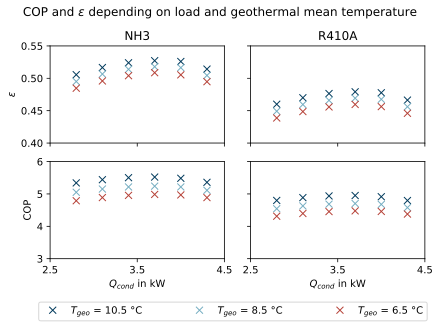
Figure: Varying geothermal temperature and heat load.¶
The results are shown in the figure above. As before, the Python code for
creating the plot can be found in the plot script
(plots.py).
The partial load behavior of the GCHP, which results from the characteristic
lines of the efficiencies of the individual components, can be recognized
in the curves shown.
Conclusion¶
This tutorial provides an exemplary insight into post-processing with the TESPy exergy analysis tool. Of course, other parameters can also be examined and varied. Feel free to try out different parameter variations. But make sure that the data ranges are not only adjusted in the Python script of the model, but also in the Python script of the plots, if a plot is created with the stand-alone plot script.
More examples of exergy analysis can be found in the
TESPy analysis section and in the API
documentation of the tespy.tools.analyses.ExergyAnalysis class. If
you are interested in contributing or have questions and remarks on this
tutorial, you are welcome to file an issue at our GitHub page.